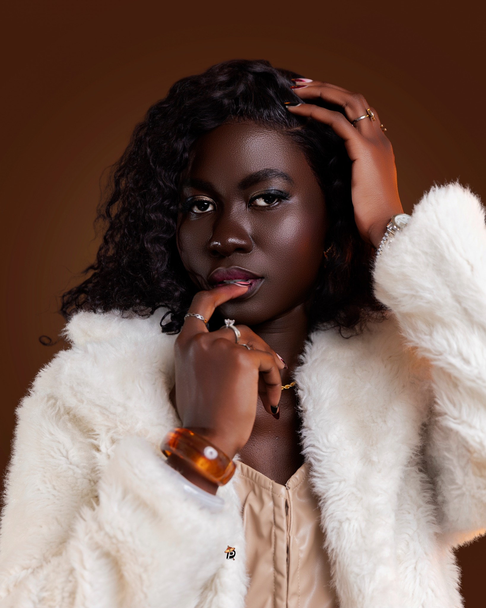

01 / PHOTO
Photographie
Portraits, événements, reportages et photographie professionnelle.

Photographie, réalisation vidéo et montage : nous créons des contenus visuels qui racontent votre histoire et valorisent vos projets.
Découvrir nos réalisationsDes solutions audiovisuelles adaptées aux marques, aux artistes, aux entreprises et aux événements.
Portraits, événements, reportages et photographie professionnelle.
Films institutionnels, clips, publicités et contenus pour les réseaux sociaux.
Montage professionnel, correction des couleurs et finition audiovisuelle.
Création de contenus visuels adaptés à votre identité et à votre public.
Une sélection de projets créatifs signés Diontado Production. Les espaces ci-dessous sont à remplacer par tes vrais projets et tes photos.
Vous recherchez un photographe, un vidéaste ou une équipe de production audiovisuelle au Sénégal ? Contactez-nous pour discuter de votre projet.
Nous contacter sur WhatsAppPense à remplacer le numéro WhatsApp provisoire par ton vrai numéro.